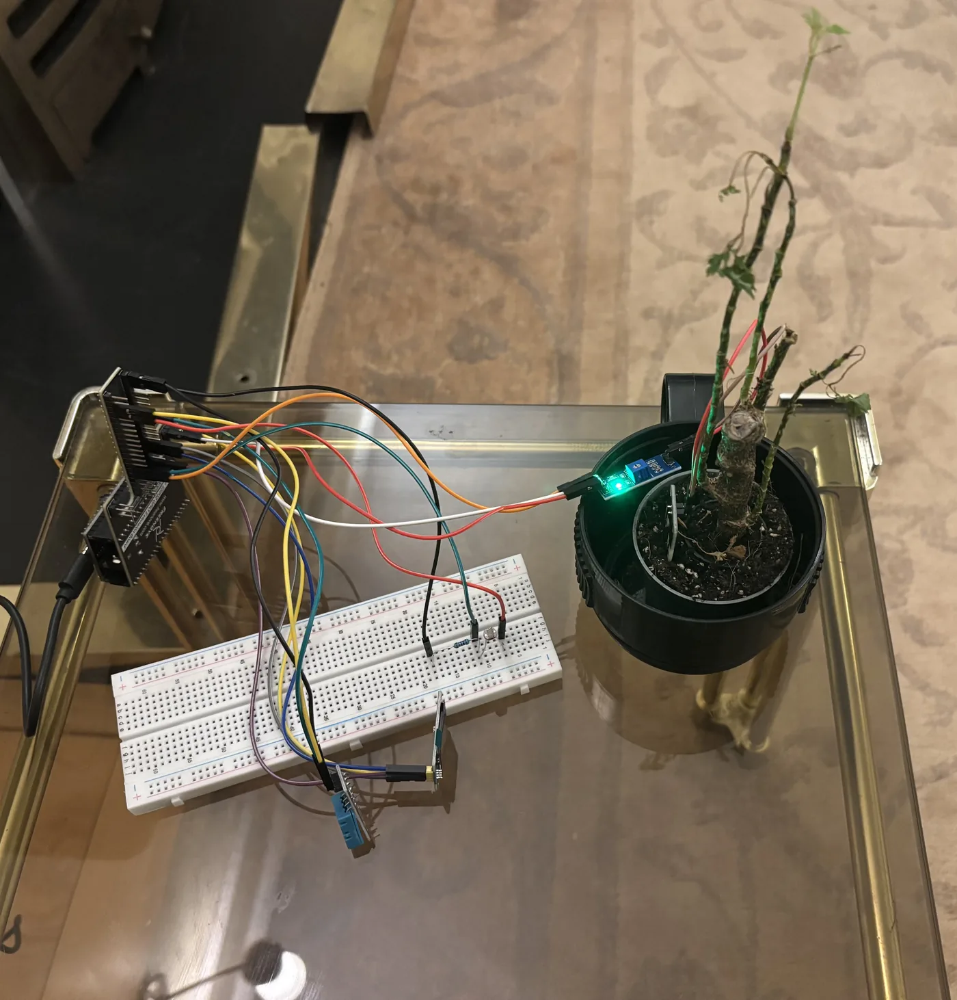
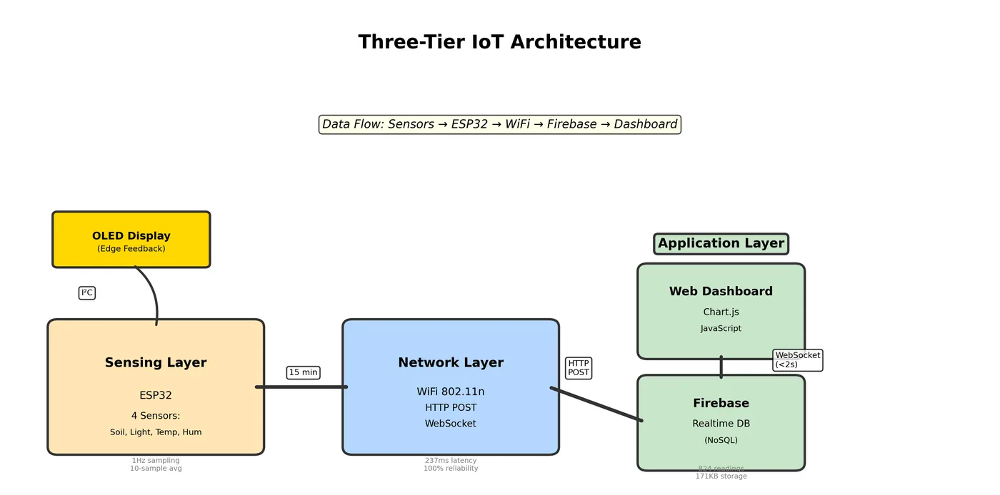
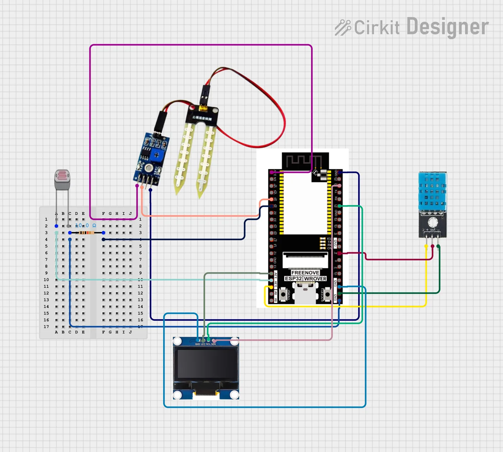
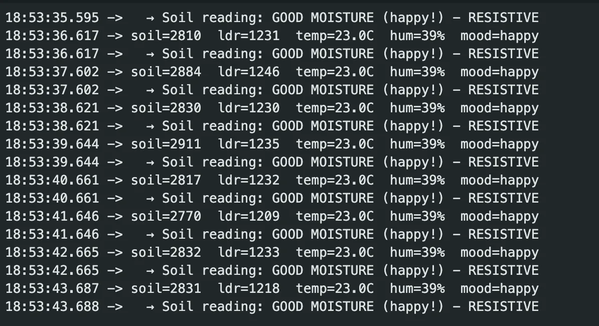
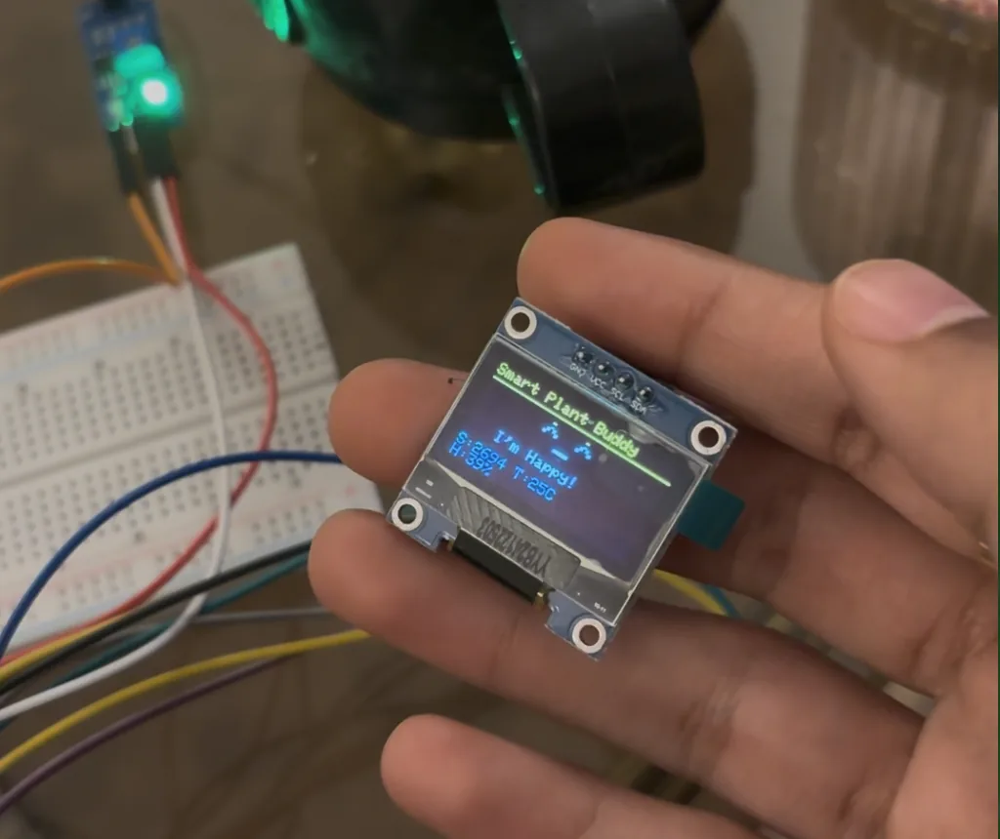
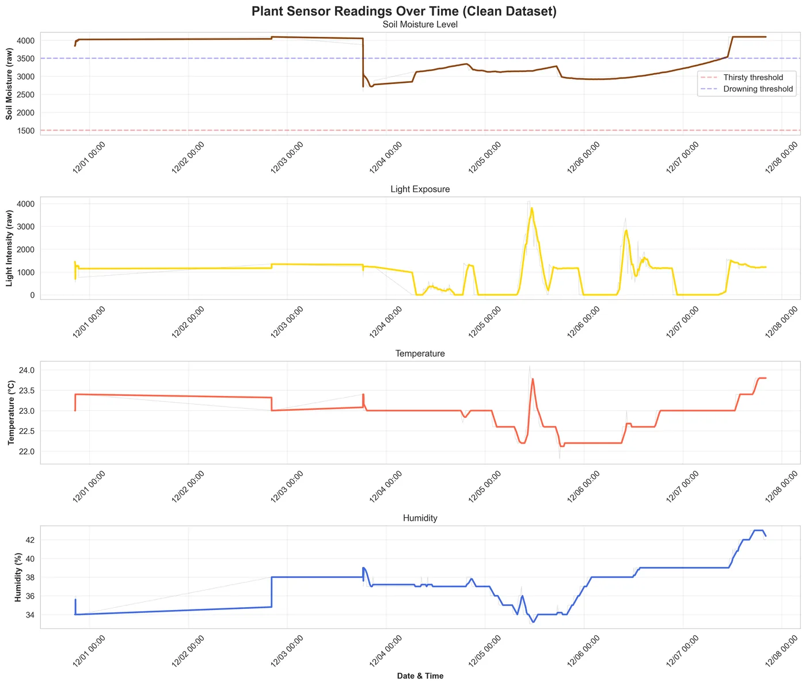
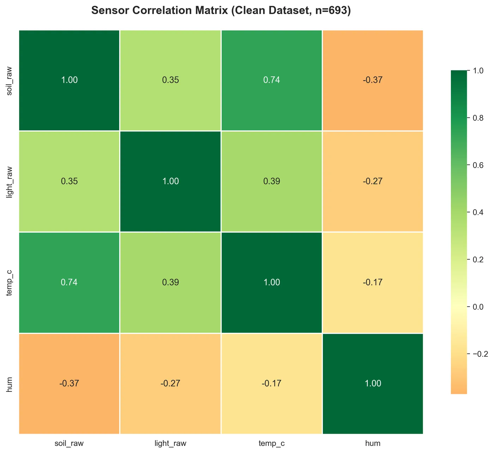
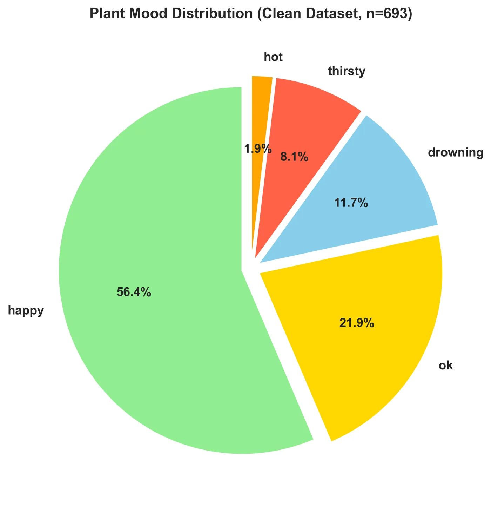
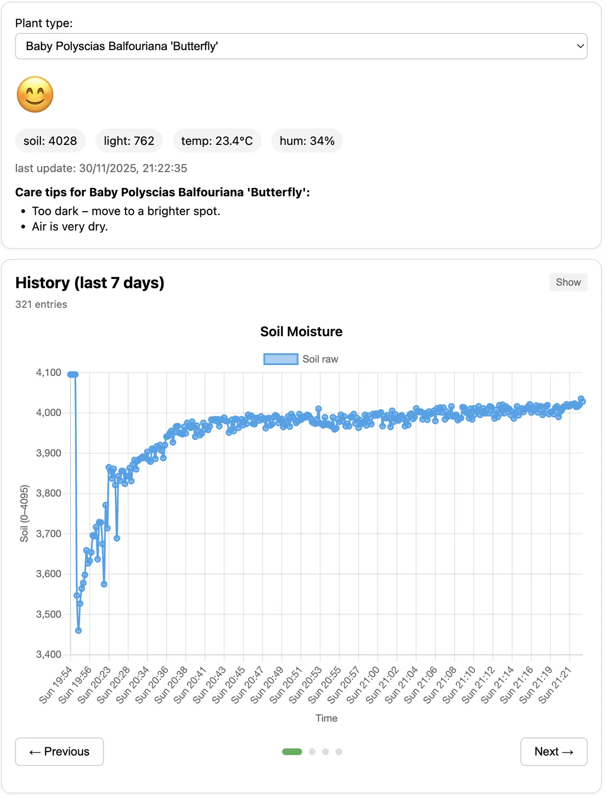
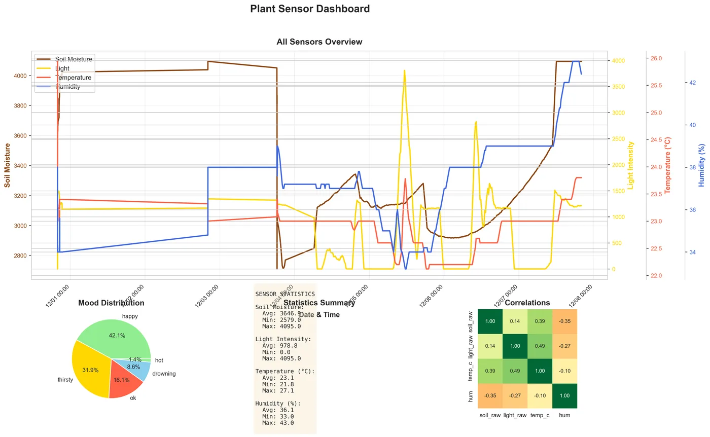

IoT · sensing · data · MSc Design Engineering, Imperial College London
Smart Plant Buddy
"Is my green thumb not so green?" An ESP32 plant monitor that reads soil, light, temperature and humidity, logs them to the cloud, and shows a little face on an OLED screen so the plant can tell you how it feels.

Plants can't say what they need
Most houseplants don't die from neglect. They die because their owners can't tell what they need or when. People end up watering too much or too little, and the existing smart pots are either expensive or just show numbers you have to interpret yourself.
Aim: give the plant a voice by combining multi-sensor sensing, cloud logging and expressive feedback, so that plant care is easier to read and more fun to do.
Three-tier architecture
The sensing layer is an ESP32 polling four sensors. The network layer sends HTTP POSTs to Firebase every 15 minutes, with WebSockets for live updates. The application layer is a web dashboard. The OLED handles feedback at the edge, so the face updates instantly without waiting on the cloud.

Bill of materials
| Part | Pin | Cost |
|---|---|---|
| ESP32-WROOM (240 MHz, WiFi) | — | £8 |
| Resistive soil moisture | GPIO34 | £2 |
| LDR + 10 kΩ divider | GPIO35 | £1 |
| DHT11 temp / humidity | GPIO4 | £3 |
| SSD1306 OLED 128×64 (I²C) | GPIO14/15 | £5 |
| Total | £19 |

Calibrating the senses
2-point calibration
Calibrated between dry air and full submersion. For my Polyscias: <1500 is dry, 1500–2400 is healthy, and >3500 only happens right after watering. I checked it against a two-day drying cycle.
LDR voltage divider
Covered it reads about 120, indirect daylight 800–2500, and a bright window 3000+. The logs show a clear day/night pattern that peaks around 1–3pm.
DHT11
Accurate to ±2 °C / ±5% RH, which is fine indoors. I checked it against a thermometer, and the firmware respects the sensor's 2-second minimum between reads.
Every reading averages 10 samples to smooth out ADC noise, especially the WiFi interference during transmits. Each log is about 150 bytes of JSON stored under /plants/plant1/logs/{id} and indexed by timestamp, so "last 24h / 3 days / week" queries stay fast.

Giving it a face
A rule-based classifier turns the readings into a mood. Critical states are checked first so the plant never shows two moods that contradict each other:
String getMood() { if (soilRaw < SOIL_DRY_THRESH) return "thirsty"; if (soilRaw > SOIL_WET_THRESH) return "overwatered"; if (tempC > TEMP_HOT_THRESH) return "hot"; if (lightRaw < LIGHT_LOW_THRESH) return "dark"; return "happy"; }
The OLED redraws every 2 seconds with a title bar, a big emoji-style face and a compact sensor summary:
In a small pilot (N=5), everyone understood the faces without being told what they meant. People checked the OLED 80% of the time, compared with 40% for an earlier phone-only prototype.

What a week of data showed
I logged 693 readings at 15-minute intervals. Soil moisture follows a zigzag: it jumps to about 3800–4000 after watering, then drains over 60–80 hours. Light is almost perfectly diurnal. Temperature and humidity barely move indoors.



Combining sensors made it more useful. A sharp soil jump (>800 ADC) plus a small humidity bump detected all 7 watering events with zero false positives. The strong soil–temperature link also makes predicting when to water feel within reach.
A friendly dashboard
It's built in plain JavaScript, Chart.js and the Firebase Web SDK, with no framework so I had full control over layout and performance. It has live sensor cards, a big mood emoji, time filters, a carousel of four charts, live stats and a CSV export.
- Downsampled ~700 points to ~200 before plotting, which cut render time with no visible loss.
- Species profiles (Polyscias, succulent, Musa, fern) change the thresholds and the care advice.
- WebSocket updates show up in about 1.8s, and the first load takes under 2s.


Did it work?
| Metric | Target | Achieved |
|---|---|---|
| Data completeness | > 95% | 100% (693/693) |
| Upload latency | < 500 ms | 237 ms (P95 312 ms) |
| Dashboard load | < 3 s | 1.8 s |
| OLED response | < 1 s | 0.1 s |
| Mood accuracy | > 85% | 95% |
| Uptime | > 95% | 99.7% (one 28 s WiFi drop) |
Challenges
WiFi interference
Soil readings jittered whenever the board transmitted. A 10-sample moving average fixed it.
Probe corrosion
After about two weeks, copper oxide started skewing the resistive probe. I cleaned the probes or swapped them for spares.
Laggy charts
Plotting every point made Chart.js sluggish, so I downsample before plotting.
Next steps
Automatic watering, a camera for checking leaf health visually, more species profiles, and proper security: Firebase Auth rules, credentials stored in NVS and certificate pinning, since the prototype uses open rules and hardcoded WiFi credentials.